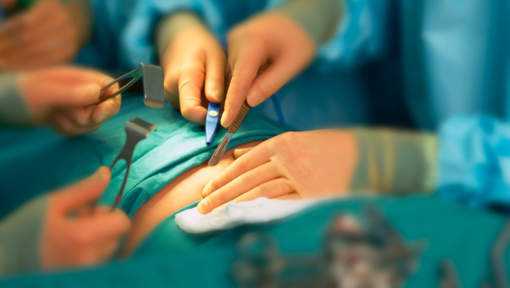

All About Surgery
By Zaki Rangwala
Table Of Contents
- What is Surgery?
- Types of Surgery
- Types Of Surgeons

What Is Surgery?
Surgery is an ancient method that is performed on a patient to investigate or treat a pathological or therapeutic condition such as a disease or injury.
It is meant to help improve function in your body or your appearance or to repair unwanted elements of your body.
Surgical procedure,operation or simply surgery are terms used when performing a surgery. So in this context, operate means to perform or undergo surgery.
And so the word surgical is applied to surgical instruments or nurses. The patient who is undergoing the surgery can be a person or even an animal.
Surgical Team
A person who practices surgery is called a Surgeon and the person practicing surgical assistance is the surgeon's assistant.
A surgical team is made up of a surgeon, surgeon's assistant, anesthesia provider, circulating nurse and surgical technologist.
Surgery can usually last for minutes to hours, but it is typically not an ongoing or periodic type of treatment. Surgery is also a term that can be indicated to a place where surgery is performed, or simply the office of a physician, dentist, or veterinarian.

Types of Surgery
Surgical procedures are commonly categorized by urgency, type of procedure, body system involved, degree of invasiveness, and special instrumentation.
- Elective surgery is done to correct a non-life-threatening condition, and is carried out at the patient's request.
- Emergency surgery is surgery which must be done promptly to save life, limb, or functional capacity.
- Exploratory surgery is performed to aid or confirm a diagnosis.
- Therapeutic surgery treats a previously diagnosed condition.
- Cosmetic surgery is done to improve the appearance
- Amputation involves cutting off a body part
- Laser surgery involves use of a laser for cutting tissue instead of a scalpel or similar surgical instruments.
- Microsurgery involves the use of an operating microscope for the surgeon to see small structures.
- Robotic surgery makes use of a surgical robot, such as the Da Vinci or the Zeus surgical systems, to control the instrumentation under the direction of the surgeon.
More types of Surgeries
There are many more surgeries than listed here and these are just the common or popular ones
- Semi-elective surgery
- Replantation
- Reconstructive surgery
- Transplant
- Cardiac Surgery
- Gastrointestinal Surgery
- Laparoscopic Surgery

Types of Surgeons
There are ten recognised specialties within surgery, all of which will provide you with different challenges and rewards throughout your career.
- Cardiothoracic surgeon:Deals with heart,lungs,oesophagus and chest
- General surgeon:Deals with breast,colorectal,endocrine,transplant,vascular etc.
- Oral and maxillofacial surgeon:Deals with facial bones,face and neck
- Otolaryngology surgeon:Deals with all aspects of head and neck region
- Paediatric surgeon:Deals with treatements of early childhood to teenage years
- Plastic surgeon:Deals with restoration of normal form and function
- Trauma and orthopaedic surgeon:Deals with bones,joints and associated soft tissues,ligaments ,nerves and muscles
- Urology surgeon:Deals with the kidney,bladder and urinary problems
- Vascular surgeon:Deals with veins and arteries
- Neuro surgeon:Deals with the brain,central nervous system and spinal cord